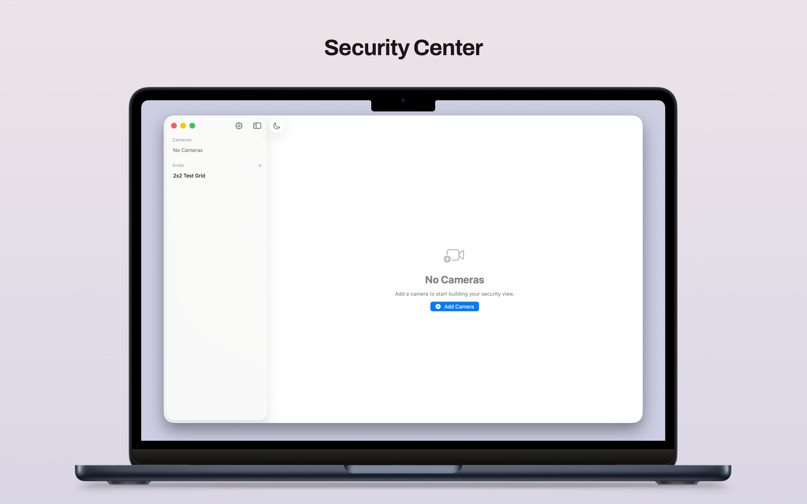
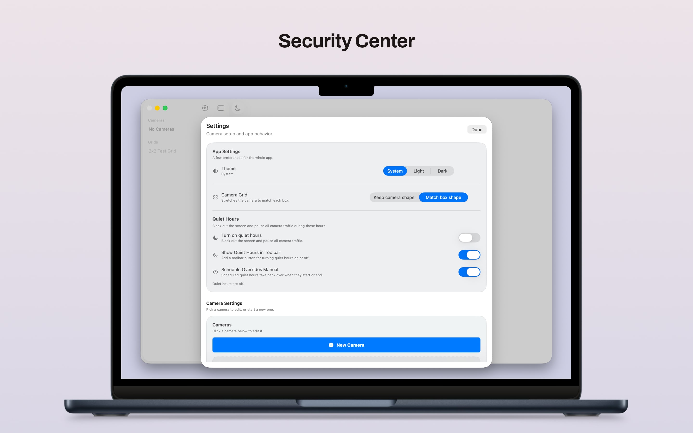
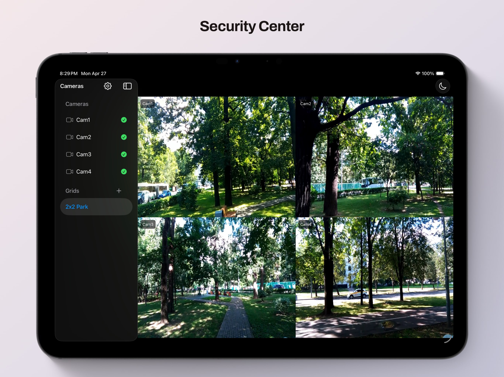
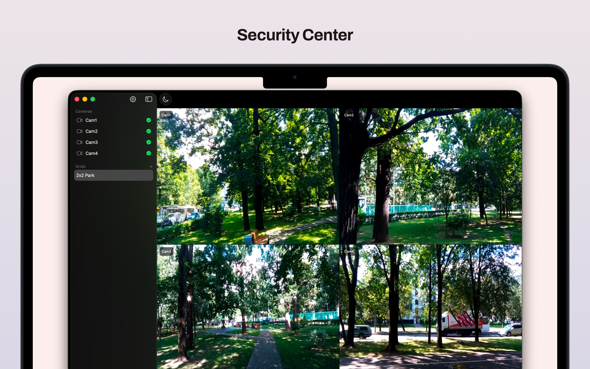

Two camera types
Use dedicated Reolink camera setup or add a full generic RTSP link for other stream sources.
Camera Monitoring for macOS and iOS
Security Center brings Reolink snapshot feeds and RTSP streams into one native app, with saved grids, quiet hours, local import and export, and settings that stay understandable.



Built for people who want a direct, local way to monitor cameras without turning setup and day-to-day use into a maintenance project.
Screenshots

Features
Use dedicated Reolink camera setup or add a full generic RTSP link for other stream sources.
Reolink cameras can use still-image polling or RTSP live video, while generic streams use RTSP directly.
Create named layouts, assign cameras to cells, and switch between single-camera and multi-camera views from the sidebar.
The sidebar shows camera status, pauses checks during quiet hours, and keeps disabled cameras visually distinct.
Black out the screen, pause polling and streaming, and let the app go still until your chosen end time.
Add, edit, copy, disable, mute, and validate cameras in a separate editor sheet with local-save behavior on both platforms.
Move your configuration around using the same JSON shape the app uses for persisted state.
The app shares one SwiftUI codebase while keeping settings flows tuned for desktop and touch layouts.
Camera settings are stored on-device, and camera traffic goes directly to the endpoints you configure.
What It Covers
Security Center is useful when some cameras are easiest to read as quick JPG refreshes, others need RTSP live video, and you still want one place to manage names, layouts, and availability.
More
The docs site covers the public-facing overview, while support and privacy pages document how the app behaves, what it stores locally, and how camera network traffic is used.